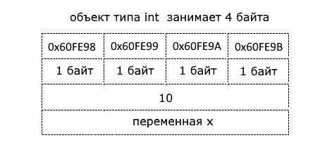
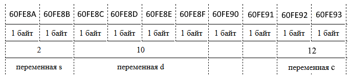

Что такое указатели
Указатели представляют собой объекты, значением которых служат адреса других объектов (переменных, констант, указателей) или функций. Как и ссылки, указатели применяются для косвенного доступа к объекту. Однако в отличие от ссылок указатели обладают большими возможностями.
Для определения указателя надо указать тип объекта, на который указывает указатель, и символ звездочки *. Например, определим указатель на объект типа int:
int *p;Пока указатель не ссылается ни на какой объект. При этом в отличие от ссылки указатель необязательно инициализировать каким-либо значением. Теперь присвоим указателю адрес переменной:
int x = 10; // определяем переменную
int *p; // определяем указатель
p = &x; // указатель получает адрес переменной
Для получения адреса переменной применяется операция &. Что важно, переменная x имеет тип int, и указатель, который указывает на ее адрес, тоже имеет тип int. То есть должно быть соответствие по типу.
Если мы попробуем вывести адрес переменной на консоль, то увидим, что он представляет шестнадцатиричное значение:
#include <iostream>
int main()
{
int x = 10; // определяем переменную
int *p; // определяем указатель
p = &x; // указатель получает адрес переменной
std::cout << "p = " << p << std::endl;
return 0;
}
Консольный вывод программы:
p = 0x60fe98В каждом отдельном случае адрес может отличаться, но к примеру, в моем случае машинный адрес переменной x - 0x60fe98. То есть в памяти компьютера есть адрес 0x60fe98, по которому располагается переменная x. Так как переменная x представляет тип int, то на большинстве архитектур она будет занимать следующие 4 байта (на конкретных архитектурах размер памяти для типа int может отличаться). Таким образом, переменная типа int последовательно займет ячейки памяти с адресами 0x60FE98, 0x60FE99, 0x60FE9A, 0x60FE9B.
И указатель p будет ссылаться на адрес, по которому располагается переменная x, то есть на адрес 0x60FE98.
Но так как указатель хранит адрес, то мы можем по этому адресу получить хранящееся там значение, то есть значение переменной x. Для этого применяется операция * или операция разыменования, то есть та операция, которая применяется при определении указателя. Результатом этой операции всегда является объект, на который указывает указатель. Применим данную операцию и получим значение переменной x:
#include <iostream>
int main()
{
int x = 10;
int *p;
p = &x;
std::cout << "Address = " << p << std::endl;
std::cout << "Value = " << *p << std::endl;
return 0;
}
Консольный вывод:
Address = 0x60fe98
Value = 10
Значение, которое получено в результате операции разыменования, можно присвоить другой переменной:
int x = 10;
int *p = &x;
int y = *p;
std::cout << "Value = " << y << std::endl; // 10
И также используя указатель, мы можем менять значение по адресу, который хранится в указателе:
int x = 10;
int *p = &x;
*p = 45;
std::cout << "x = " << x << std::endl; // 45
Так как по адресу, на который указывает указатель, располагается переменная x, то соответственно ее значение изменится.
Создадим еще несколько указателей:
#include <iostream>
int main()
{
short c = 12;
int d = 10;
short s = 2;
short *pc = &c; // получаем адрес переменной с типа short
int *pd = &d; // получаем адрес переменной d типа int
short *ps = &s; // получаем адрес переменной s типа short
std::cout << "Variable c: address=" << pc << "\t value=" << *pc << std::endl;
std::cout << "Variable d: address=" << pd << "\t value=" << *pd << std::endl;
std::cout << "Variable s: address=" << ps << "\t value=" << *ps << std::endl;
return 0;
}
В моем случае я получу следующий консольный вывод:
Variable c: address=0x60fe92 value=12
Variable d: address=0x60fe8c value=10
Variable s: address=0x60fe8a value=2
По адресам можно увидеть, что переменные часто расположены в памяти рядом, но не обязательно в том порядке, в котором они определены в коде программы:
 Лабораторная №1
Лабораторная №1